ICM 1/48 MiG-3 High Altitude Fighter Kit #48051
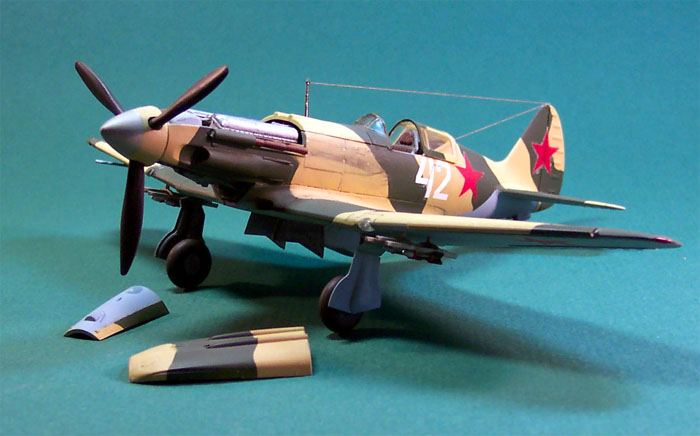
MSRP $12.98 USD
Images, text and model Copyright © 2003 by Matt Swan
When ICM announced the release of a 1/48 scale injection molded MiG-3 in the 1990’s I was standing at the head of the line to acquire and build one. Although ICM as a company is now in limbo the models are still readily available and for the price, an excellent buy. This model was a first for me in many ways. It was the first ICM kit that I had ever built, it was the first model that I experimented with artist’s pencils for panel lines and it was the first model that I used ground pastels to simulate exhaust staining.
Developmental History
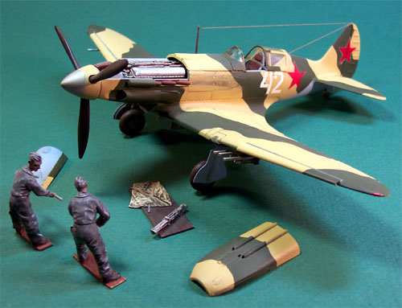
During the initial period of The Great Patriotic War between the Soviet Union and Nazi Germany (how the Soviets referred to WWII) the MiG-3 was the most numerous high-altitude fighter in the Soviet arsenal. Ordered into production in December 1940 with squadron deliveries beginning in April of 1941, the MiG-3 was the first successful project of the team led by chief designers Artyom Mikoyan and Gurevich. This sleek Soviet fighter was faster than the Bf 109F and could out maneuver the vaunted Messerschmitt as well. At first the Luftwaffe High Command refused to believe the reports of their pilots, but soon the reality became undeniable. The MiG-3 had arrived. Although the MiG-3 was a formidable high speed/high altitude fighter, its performance at lower speeds and altitudes was "not brilliant". The MiG-3 was almost perfectly suited for it’s designated role, but events of 1941 forced pilots to play on the wrong field as a replacement for conventional fighters or even ground attackers. It was a forced misuse of a good high altitude interceptor with limitations in low altitude performance.
At the beginning of the Great Patriotic War many MiG pilots rammed German bombers after running out of ammunition - often the order was "to stop bombers by any means".
Performance wise, the MiG-3 could fly 110 km farther than the worthy Bf 109F-4, the absolute maximum speed of the MiG-3 was higher than that of the Bf 109F-3 and it was more maneuverable than the Bf 109. The 109F proved to be more maneuverable at low to medium speeds, particularly at low to medium altitude. All fuel tanks were surrounded by inert gas to reduce the chance of fire or explosion due to battle damage and the pilot was protected by 9mm seat armor.
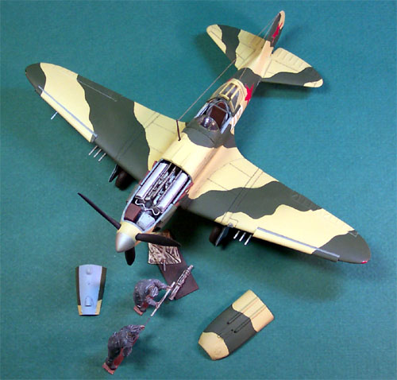
The MiG-3 was primarily built around a steel tube frame with duralumin skin. It was powered by a AM-35A Mikulin V-12 engine that developed 1350 horsepower giving it a maximum speed of 398 mph at 25,590 feet. It was armed with one 12.7mm (.50 caliber) machine gun and two 7.62mm (.30 caliber) machine guns, all mounted in the nose and synchronized to fire through the propeller arc. Four wing hard-points allowed the MiG-3 to carry 440 pounds of bombs or six 3.2-inch RS82 rockets. The firepower of many production MiG-3's was increased by the addition of a 12.7mm BK machine gun mounted externally beneath each wing, and a few were built with these extra guns installed internally in the wings. Automatic leading edge slats were installed in the wings to compensate for poor spin recovery performance and to improve landing and take-off characteristics.
Total MiG-3 production amounted to some 3120 aircraft, and 50 more were built from available parts during the first half of 1942. The MiG-3 remained in service almost to the end of the war; wrecked aircraft were often cannibalized to keep others flying. Thanks to exceptionally easy maintenance, repairability and part compatibility, generally from 2-3 non-repairable machines one flying machine could be assembled in field conditions.
Many Russian aces were created flying the MiG-3 fighter. Aleksandr Ivanovich 'Sasha' Pokryshkin, the second leading Soviet ace of the war, scored 59 official victories. Most of these kills were recorded behind the controls of a MiG-3. Nikolai Kuznetsov scored 36 kills and Vasilii Zaitsev racked up 34.
The Kit
The kit itself is pretty amazing. I had purchased a couple of Zvelda kits in the past and expected to see a similar product when I opened the box from ICM. Not so, this model is a “full meal deal”, gravy and cobbler included. The kit includes a complete AM-35A Mikulin V-12 engine, a well detailed gun platform and machine guns, a nicely detailed dashboard – both front and back and a selection of under wing stores. The landing gear is well detailed with many more detail parts than most top shelf kits. The cockpit includes some very nice detail of the tubular frame structure of the aircraft. The plastic is fairly soft which is one drawback of the kit. If you are not careful while trimming pieces you can cause the plastic to tear or accidentally cut into the part quite easily. The parts demonstrate a lot of flexibility also.
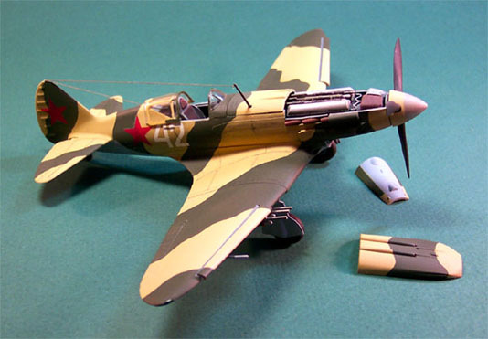 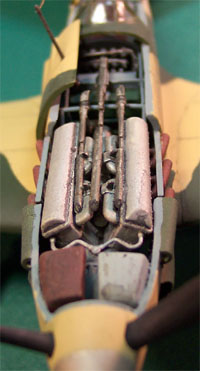
The kit is comprised of four sprues of injection molded pieces in light gray, soft plastic with finely engraved panel lines and details. There are 117 gray polystyrene pieces. Also, we have one small sprue of clear parts which includes a three piece canopy that can be built in the open or closed position, a reflective gun sight and a landing light lens so all told the model kit consists of 122 pieces. The instructions are nicely done exploded views with three pages of construction diagrams, two pages of decal placement, and a comprehensive color chart in four languages that also lists paints by Testors and Humbrol numbers.
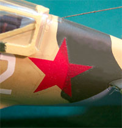
Other neat features are separate leading edge flaps, ailerons as individual parts and a separate rudder. There is a decal sheet that includes a variety of markings allowing the modeler to choose from ten different aircraft – wow, you don’t usually see that kind of selection. While the registry of the decals is very good the color density is not. Where the fuselage decal is placed over a demarcation line in the camouflage pattern it shows through the decal clearly.
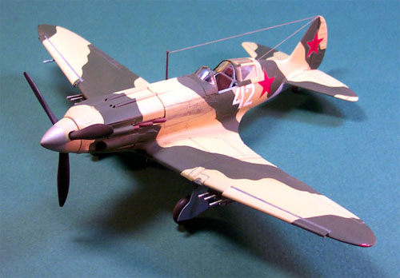
Now I’ve built model aircraft before with aftermarket engines and open service bays but the covers and panels never fit properly to close the model up so you are forced to permanently display the finished kit “open”. ICM managed to produce a kit where this is not the case. The hood (2 pieces) and lower service panel can be easily pressed into place, fit properly and snuggly enough to stay in place and the model can be displayed fully buttoned up.
Construction
Construction was a straightforward affair with the interior subassemblies being completed with few if any fit problems. I added some fuse wire to the backside of the dash and washed all interior assemblies with a black wash. I did not use any putty anywhere on the model during construction – that’s how well parts fit together. I mixed my own desert sand and dark green colors from Testors flat enamel paints and did the underside in a lightened flat sky blue.
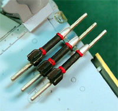
The kit includes both gun pods or rockets for the under wing stores and I selected the rockets. On the next one I build I’ll use the gun pods and there will be a next one.
As a last construction step I usually install the aerial made from invisible thread painted with brass enamel. Here I ran into a problem. The engine hood is a two-piece assembly and the front aerial mast runs through it. How the heck am I supposed to get the aerial installed and still be able to open that hood to view the nifty details inside? After fiddling around with it for a little while I found that I could lift the back hood about halfway up the mast and then rotate it to view the internal components.
The decals were applied in a standard fashion with Micro-Set and Micro-Sol setting solutions and when everything had dried I used Testors Dull Coat to seal everything. The panel lines were done with an artist’s pencil and I am not very happy with the results. The pencil would not reach fully into the engraved line and left a track along each side of the panel line and no material in the deepest part of the engraving. I much prefer using a sludge wash for these effects. I was not happy with the exhaust staining either. I find that using some Tamiya X-19 smoke first then using the pastel chalks makes for better results.
The ground crew and work platform are not part of the kit. This is actually the German Gun Cleaning Crew from Verlinden Productions.
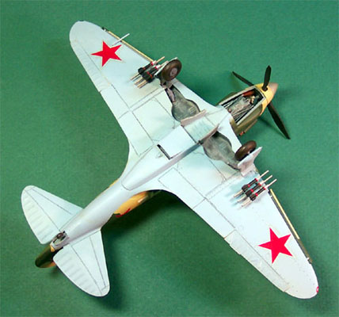
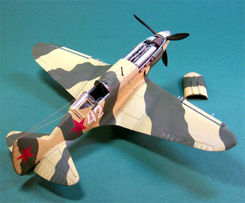
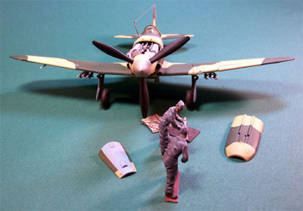
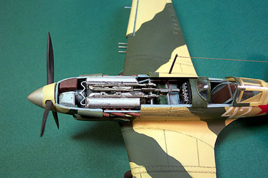
Conclusions
This is a really fun kit and for the price you just can’t beat it. If this were a Tamiya or Hasegawa offering I would expect the price tag to be in the forty-dollar range. The model offers lots of finely detailed features, a beautifully detailed engine, gun-bay and cockpit. The parts fit together very well. The plastic is soft which I’ve found to be a common problem with ICM kits and the decals have poor color density. ICM has demonstrated that we can look for high quality products at very reasonable prices from the former Soviet Union.